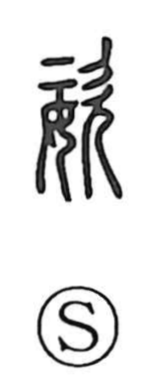

姿

Kun: sugata | On: shi
figure ・ appearance
Explanation
Shirakawa sees 姿 as a phono-semantic character: 女, “woman,” gives the sense, while 次 serves as the phonetic and in its oldest form depicts a person with mouth agape in lament. This value is echoed in 咨, which combines 次 with a 口 component used in ritual graphs for a receptacle that holds written prayers, and thus signifies chanting, lament, and complaint addressed to the gods. Against this background, 姿 originally evoked the figure of a grieving woman—the posture and bearing shaped by lamentation—then broadened to mean one’s outward figure or pose, as in 姿態, the artful posture or allure.